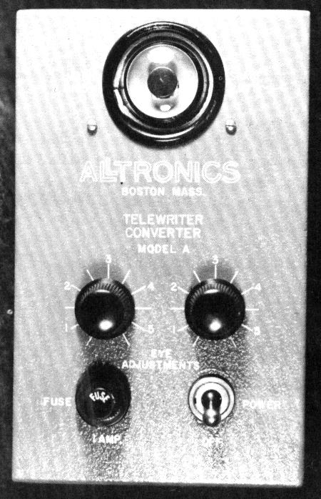
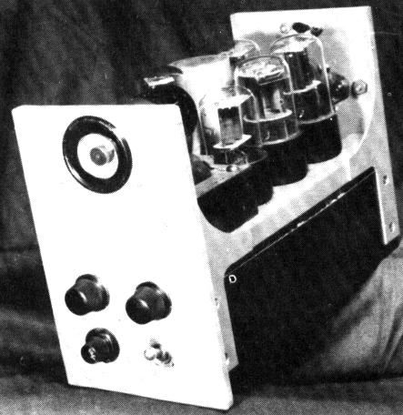
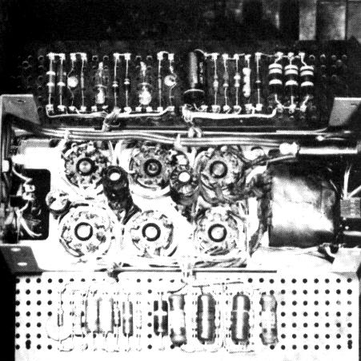
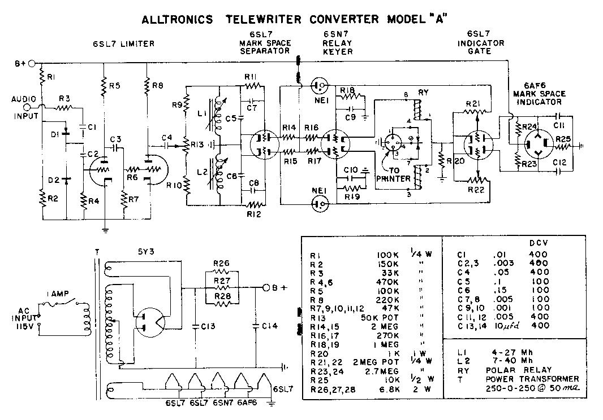

Alltronics Teletypewriter
Model - A
Receiving Converter
- The Alltronics “Mark-Space” Receiving Converter
plugs into the phone jack of any radio receiver and
converts mark and space Teletypewriter signals into
pulses suitable for the operation of a polar relay. The
polar relay makes and breaks the 110 v. d. c. supply to
the selecting magnets within the Teletypewriter printer.
- The Mark-Space Receiving Converter has a built in 110 v.
a. c. power supply, to supply the filament and plate
voltages for its operation.
- A dual unit 6AF6 Tuning Eye is used for more accurate
receiver tuning.

- A 6SLT amplifier increases the sensitivity of the tuning
eye.
- Two potentiometers mounted on the panel control tuning
eye adjustments.
- There are two octal sockets on the back of the chassis,
one of which may be used to plug in an octal base midget
polar relay. The other socket is for input from the
associated radio receiver, and for connections to polar
relays other than the type furnished by us.
- All resistors and capacitors, except the power supply
filter capacitor which is the octal base plug-in type,
are mounted on two terminal boards. These terminal boards
are mounted vertically on opposite sides of the chassis
base. Wiring to the terminal boards is colorcoded and
cabled.
- Tube line-up: 6SL7 limiter, 6SL7 detector, 6SN7 current
amplifier, 6AF6 (lual tuning eye, 6SL7 tuning eye
amplifier, 5Y3GET rectifier, two NE-2 neon.
- Panel size 4x6 inches, depth of the cabinet 8 inches.
- Cabinet finish: Gray crackle.
NOTE: Do not try to order this
product, it was marketed in December 1955!!!
Kit price with tubes $59.50. Wired and tested $89.50, F.O.B.
Boston.
Polar relay 88.50.
 |
 |
NOTE: Use your right mouse
button to view or save schematic
